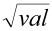
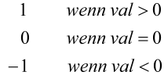
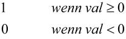
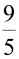
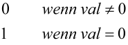
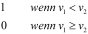
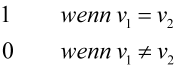

|
|
|


计算变量
您无法定义自己的变量（用于FOR 循环的数值变量除外（参见FOR 循环），这些变量由您（作为用户）指定，并且可以输出一个值）。
占位符
使用占位符来指定变量的文件类型和格式：
- %i表示一个整数
- %f表示一个浮点数
- %n1.v2f表示一个格式化浮点数，总共有v1位（包括符号和小数点）以及v2位小数
- %s表示一个左对齐字符串（文本）
- %ns表示在长度为n个字符的字段中的右对齐字符串（n是一个整数）。
数据类型必须与程序中的定义匹配。值在占位符所在的确切位置返回。格式化的语法对应于C/C++标准。
示例
- %10.2f返回一个位于长度为10个字符且有2位小数的字段中的浮点数。在这种情况下，小数点位于"%"字符的位置。
- %i返回一个在百分号左侧右对齐的整数。因此该数字直接位于浮点数整数部分的正下方，并处于相同位置。
- %30s表示一个位于长度为30个字符的字段中的右对齐字符串。如果省略数字30，则数字在输出时左对齐。
反例
- %8.2i是无效的格式化，因为整数没有小数位。
- %10f2输出一个右对齐的 10 位浮点数。然而，2位小数被忽略并作为文本2输出。默认设置是将浮点数输出为6位小数。
变量
要显示的变量必须紧跟在占位符之后，同一行。变量用大括号括起来标识。如果省略这些括号，变量名将作为普通文本显示。
重要：占位符的数量必须与大括号对的数量完全一致。
示例
%f {sheave[0].d}返回变量sheave[0].d在位置%f处的值，作为具有6位小数的浮点数。
基本计算类型 - 变更变量的输出
您可以在报告中输出变更后的变量。它们可以乘以或除以一个系数。您也可以加上或减去一个数。此功能也可用于IF或FOR语句的参数中（见下文）。
| 变量乘以某数后的值 | %3.2f | {Var*2.0} |
| 变量除以某数后的值 | %3.2f | {Var/2.0} |
| 变量加上某数后的值 | %3.2f | {Var+1.0} |
| 变量减去某数后的值 | %3.2f | {Var-2} |
Degree 和 Gear 这两个函数也可用于将变量转换为度或弧度：
角度 %3.2f {degrees(angle)}
变量也可以直接相互连接，例如采用{sheave[0].d- sheave[1].d}的形式。两个以上的数也可以连接。带符号的数必须用括号括起来，例如{ZR[0].NL*(1e-6)}。
可用函数列于表8.2中。
| 函数 | 含义 |
| sin(angle) | 角度的正弦（以弧度为单位） |
| cos(angle) | 角度的余弦（以弧度为单位） |
| tan(angle) | 角度的正切值（弧度制） |
| asin(val) | val 的反正弦值，返回弧度制 |
| acos(val) | val 的反余弦值，返回弧度制 |
| atan(val) | val 的反正切值，返回弧度制 |
| abs(val) | |val| |
| exp(val) | eval |
| log(val) | 返回满足ex = val的x值 |
| log10(val) | 返回满足10x = val的x值 |
| sqr(val) | 返回val2 |
| sqrt(val) | 返回值  |
| int(val) | val 的整数部分 |
| pow(x;y) | 返回xy |
| sgn(val) | 返回值  |
| sgn2(val) | 返回值  |
| grad(angle) | 将弧度转换为度数 |
| rad(angle) | 将度数转换为弧度 |
| DegMinSec(angle) | 以字符串形式返回角度（10°5'55''） |
| mm_in(val) | 返回值 val/25.4 |
| celsius_f(val) | 返回值  val + 32 |
| min(ν1; ...; ν5) | 返回值是ν1,...,ν5中的最小值 |
| max(ν1; ...; ν5) | 返回值是v1,...,ν5中的最大值 |
| and(ν1; ν2) | 二进制与函数 |
| or(ν1; ν2) | 二进制或函数 |
| xor(ν1; ν2) | 二进制异或函数 |
| AND(ν1; ...; ν5) | 逻辑与函数 |
| OR(ν1; ...,ν5) | 逻辑或函数 |
| NOT(val) | 返回值  |
| LESS(ν1; ν2) | 返回值  |
| EQUAL(ν1; ν2) | 返回值  |
| GREATER(ν1; ν2) | 返回值 |
| ROUND(x;n) | 将 x 四舍五入到 n 位 |
| strlen(str) | 字符串长度 |
| strcmp(str1;str2) | 比较字符串 返回值： 如果 str1 = str2 则为 1 否则为 0 |
表 8.1：报告中可用于计算的函数
Calculation variables
You cannot define your own variables (apart from the number variables used for FOR loops (see chapter FOR loop), which you (as the user) specify, and which can output a value.
Placeholder
Use placeholders to specify the file type and formatting for a variable:
- %i stands for a whole number
- %f stands for a floating point number
- %n1.v2f stands for a formatted floating point number with v1 places in total (including sign and decimal point) and v2 decimal places
- %s stands for a left-justified character string (text)
- %ns stands for a right-justified character string in a field with length n characters (n is a whole number).
The data types must match the definition in the program. The value is returned in exactly the place where the placeholder is positioned. The syntax of the formatting corresponds to the C/C++ standard.
Examples
- %10.2f returns a floating point number in a field that is 10 characters long and has 2 decimal places. In this case, the decimal point is in the position of the "%" character.
- %i returns a whole number that is right-justified to the left of the percentage sign. This number is therefore positioned directly underneath the whole number part of a floating point number and in the same position.
- %30s stands for a right-justified character string in a field with length 30 characters. If the number 30 is omitted, the numbers are left-justified when they are output.
Counter-examples
- %8.2i is an invalid formatting because a whole number has no decimal places.
- %10f2 outputs a right-justified 10-digit floating point number. However, the 2 decimal places are ignored and output as text 2. The default setting is to output floating point numbers to 6 decimal places.
Variables
The variable to be displayed must stand after the placeholder in the same row. The variable is identified by being enclosed in curly brackets. If these brackets are left out, the variable name will be displayed as normal text.
Important: It is essential that the number of placeholders exactly matches the number of pairs of brackets {}.
Example
%f {sheave[0].d} returns the value of the variable sheave[0].d in the location %f as a floating point number with 6 decimal places.
Basic calculation types - output of changed variables
You can output changed variables in the report. They can be multiplied or divided with a coefficient. You can also add or subtract a number. This functionality is also available in the arguments used in the IF or FOR statements (see below).
| Value of the variable multiplied | %3.2f | {Var*2.0} |
| Value of the variable divided | %3.2f | {Var/2.0} |
| Value of the variable added | %3.2f | {Var+1.0} |
| Value of the variable subtracted | %3.2f | {Var-2} |
The two Degree and Gear functions are also available for converting variables to degrees or radians:
Angle %3.2f {degrees(angle)}
Variables can also be linked with each other directly, e.g. in the form {sheave[0].d- sheave[1].d}. More than two numbers can be linked. Numbers that have signs must be enclosed in brackets, for example {ZR[0].NL*(1e-6)}.
The available functions are listed in Table 8.2.
| Function | Meaning |
| sin(angle) | sine of angle in the radian measure |
| cos(angle) | cosine of angle in the radian measure |
| tan(angle) | tangent of angle in the radian measure |
| asin(val) | arcsine of val, returns radian measure |
| acos(val) | arccosine of val, returns radian measure |
| atan(val) | arctangent of val, returns radian measure |
| abs(val) | |val| |
| exp(val) | eval |
| log(val) | Return value x in ex = val |
| log10(val) | Return value x in 10x = val |
| sqr(val) | Return value val2 |
| sqrt(val) | Return value |
| int(val) | Whole number of val |
| pow(x;y) | Return value xy |
| sgn(val) | Return value |
| sgn2(val) | Return value |
| grad(angle) | Converting from the radian measure to degrees |
| rad(angle) | Converting from degrees to radian measure |
| DegMinSec(angle) | Return angle as string (10°5'55'') |
| mm_in(val) | Return value val/25.4 |
| celsius_f(val) | Return value val + 32 |
| min(ν1; ...; ν5) | The return value is the minimum of ν1,...,ν5 |
| max(ν1; ...; ν5) | The return value is the maximum of v1,...,ν5 |
| and(ν1; ν2) | binary and function |
| or(ν1; ν2) | binary or function |
| xor(ν1; ν2) | binary exclusive or function |
| AND(ν1; ...; ν5) | logical and function |
| OR(ν1; ...,ν5) | logical or function |
| NOT(val) | Return value |
| LESS(ν1; ν2) | Return value |
| EQUAL(ν1; ν2) | Return value |
| GREATER(ν1; ν2) | Return value |
| ROUND(x;n) | Rounds off x to n places |
| strlen(str) | Length of character string |
| strcmp(str1;str2) | Compare character string Return value: 1 if str1 = str2 0 otherwise |
Table 8.1: Functions available for calculations in the report